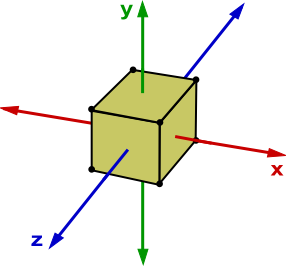

Using translate() to show or hide
We can use translateX to hide a menu away behind the user-interface, when the checkbox is unchecked.
But when the user clicks a label that toggles the checkbox, we can use that new checkbox state to act as the open signifier for the menu.
When that happens, we reset the nav's translateX.
If you have some time left over:
- Try use
scale()instead oftranslateX()
Mixing Rotations with Translates
Let's simulate a solar system by placing the Earth off to the right the Sun, the moon in orbit around the Earth, off to the right too, like this image:

Then let's try rotating the Earth around the Sun, and rotating the moon around the Earth, by selecting the right elements to transform.
To simulate it fully, we have to light the right side of the Earth and Moon as they travel around the Sun. How can we undo the rotations of these elements if needed?
If you have some time left over:
- Try to simulate our solar system in terms of scale. If the Sun is one unit high, then how many units would the Earth be in size? How many units would the Earth be apart from the Sun? etc.
- Try adding other planets. Saturn with its many moons would be fun to make :)
- Try going 3D! Shift our perspective, place tilts in the Earth spinning on its own axis, and the Moon's orbit around Earth tilting by 5 degrees.
3D transforms
Let's build a 3D dice (a cube).

The cube's size should be var(--face-size) * var(--face-size) * var(--face-size).
- Start by placing the 1 and 6 on either sides of a 3D cube by using
translateZ(). - You can click the checkbox to 'spin' the cube. This will allow you to see how your transforms are working along the way.
- Then try rotating the 2 and 5 along the correct axis (X, Y or Z?), and translating them into the correct position, either before or after the rotate.
- Lastly, use a similar technique for the 3 and 4, but over different axes.